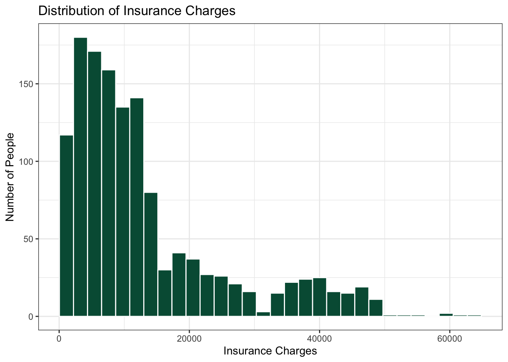
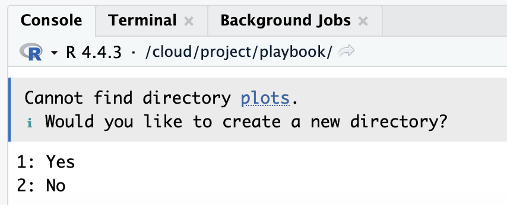
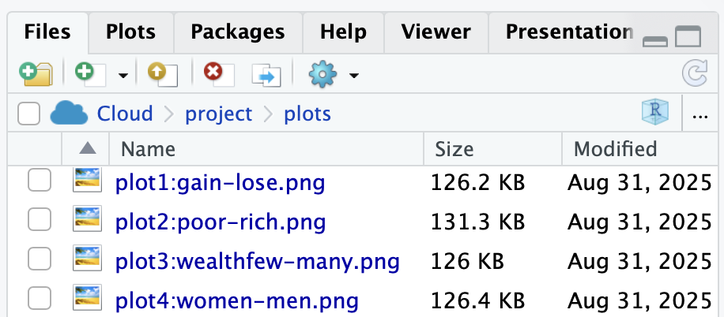

Build a plot one layer at a time in your web browser
Authors
Andrew Silhavy
Shane McCarty, PhD
Published
09.20.2026
Abstract
This chapter shows researchers what code does before they install any software. Using real insurance data and code cells that run in the web browser (WebR), researchers watch one plot being built one layer at a time with ggplot2’s “grammar of graphics” (data, mapping, geometries, statistics, facets, coordinates, and theme), and they try small changes to see how the output changes. The chapter ends with how most chapters in this playbook work (The Play, The Lab, Your Turn) and, for later, how to choose one theme for all of your plots and how to save a plot with ggsave().
Keywords
ggplot2, grammar of graphics, layers, theme, ggsave, WebR
CautionCaution: Be patient, this page is slow to load
The gray code boxes with a Run Code button run R inside your web browser, so you do not need to install anything yet. The first time you open this page, your browser has to download R. That can take 30 to 60 seconds, and longer on campus Wi-Fi. Wait until the status at the top of the page says Ready before you click Run Code. A laptop works better than a phone. If a box never becomes ready, keep reading: every step also shows the code and the plot it makes.
2.1 Start Here: What Does Code Do?
Code is a set of written instructions. You write a line, R follows it, and you see the result. In this chapter you do not need to understand every word of the code, and you do not need to write any code yourself. Your only job is to notice two things:
Code builds. Each new line adds something to the plot.
Small changes matter. Change one word or one number, run it again, and the plot changes.
GoGo: Read the step, look at the plot, then try it
Each step below shows the code and the plot it makes. Under it is a Try it box where you can run the same code yourself and change one thing. You cannot break anything. If you get an error, reload the page and start again.
2.2 Example Data: insurance
The example dataset is from the “Medical Cost Personal Costs” database on Kaggle. For this chapter, we refer to it as insurance.
In R, anything you give a name to is called an object. Think of an object as a labeled box: R puts something inside the box, and from then on you use the name on the label to get it back. Here, the box is named insurance, and inside it is all of our data: a table with one row for each person and one column for each thing we know about them. A table of data like this is called a dataset. Every time you see the word insurance in the code below, it means “use that dataset”.
2.2.1 What do I do in this chapter?
In this chapter you will see two kinds of gray boxes.
A box with a small clipboard icon in its corner shows code and the result it made when this page was built. The clipboard copies the code so that you can paste it somewhere else. You will not use the clipboard in this chapter. There is nothing to copy, paste, or type. Here is an example:
head(insurance)
age sex bmi children smoker region charges
1 19 female 27.900 0 yes southwest 16884.924
2 18 male 33.770 1 no southeast 1725.552
3 28 male 33.000 3 no southeast 4449.462
4 33 male 22.705 0 no northwest 21984.471
5 32 male 28.880 0 no northwest 3866.855
6 31 female 25.740 0 no southeast 3756.622
A box with a Run Code button is live. When you click the button, R runs that code inside your browser and shows you the result underneath. Try it now. Wait until the status at the top of the page says Ready, then click Run Code. You should see the same first six people in the dataset.
That is all you do in this chapter: read the code, click Run Code, and watch what the code makes.
2.2.2 Load and Import
These two lines import the data and load the ggplot2 package. Think of R as a new phone and a package as an app. A new phone can do a few things by itself, and apps add everything else. In the same way, R can do basic math and statistics, and ggplot2 is the app that adds plots. You install an app once, and you open it every time you want to use it. library(ggplot2) is how you open the app.
insurance <-read.csv("data/insurance.csv")
library(ggplot2)
2.2.3 Look at the data
Each row is one person. Each column is one variable, such as age, smoker, and charges (the person’s medical costs).
head(insurance, 10)
age sex bmi children smoker region charges
1 19 female 27.900 0 yes southwest 16884.924
2 18 male 33.770 1 no southeast 1725.552
3 28 male 33.000 3 no southeast 4449.462
4 33 male 22.705 0 no northwest 21984.471
5 32 male 28.880 0 no northwest 3866.855
6 31 female 25.740 0 no southeast 3756.622
7 46 female 33.440 1 no southeast 8240.590
8 37 female 27.740 3 no northwest 7281.506
9 37 male 29.830 2 no northeast 6406.411
10 60 female 25.840 0 no northwest 28923.137
2.3 How do I visualize data in R?
The ggplot2 packages uses seven layers to produce plots/figures for your paper and team poster:
Data: The dataset you’re visualizing
Mapping: Which variables go on which axes (aesthetics)
Geometries: The type of plot (points, lines, bars, etc.)
Facets: Subplots based on categorical variables
Statistics: Statistical transformations of the data
Coordinates: The coordinate system (usually Cartesian)
In this chapter, headings are color-coded to match the ggplot2 layers:
📊 Data: The dataset
🗺️ Mapping: Which variables go where
📍 Geometries: Points, bars, lines
📏 Scales/Statistics: Axes, calculations
🔲 Facets: Separate panels
📐 Coordinates: Coordinate system
🎨 Theme: Visual appearance
Watch for these colors as you build plots step-by-step! 🎨
In summary, researchers construct a plot using ggplot2 components in the same way a chef constructs lasagna in layers, one steps at a time.
In ggplot2, add layers as you would in making lasagna
2.5 Build One Plot, One Layer at a Time
A histogram is the simplest plot: it shows how one variable is spread out. You will use histograms later to describe your data and to check whether it is normal. Watch how each line adds one layer.
Step 1: Set up data
ggplot(data = insurance)
You get an empty gray box. R knows which data to use, but not what to draw.
Try it. Click Run Code. You should see the same empty box.
Step 2: Set up mapping
A histogram needs only one variable, on the x axis.
One more line, and the bars appear. The + at the end of a line means “and then add this”.
Try it. Run the code. Then change 30 to 5, and then to 100. Same data, same plot type, a very different picture.
CautionCaution: Don’t start a line with +
Layers are joined with a + at the end of a line. If a line starts with +, R runs the plot without that layer and then gives you an error. Look at the code above: the + comes at the end of the line, right before geom_histogram().
Step 4: Add labels and a theme
plot_charges <-ggplot(data = insurance,mapping =aes(x = charges)) +geom_histogram(bins =30, fill ="#005a43", color ="white") +ggtitle("Distribution of Insurance Charges") +xlab("Insurance Charges") +ylab("Number of People") +theme_bw()plot_charges

Figure 1. A histogram of insurance charges. Most people have low charges and a few people have very high charges.
Try it. Run the code. Then change "#005a43" to "purple". Then delete the + at the end of one line and run it. You will get an error. That is normal: put the + back and run it again.
CautionCaution: Saving a plot does not show it
plot_charges <- ggplot(...) saves the plot as an object in your environment. To see it, type the object’s name on its own line (or use print()), like the last line of the code above.
2.6 What You Just Learned About Code
Code runs from top to bottom, one line at a time.
Each line adds one thing. You built a plot in four steps: data, mapping, bars, then labels and a theme.
Small changes give different results. One number changed the whole shape of the histogram.
Errors are normal, and they can be fixed. A missing + broke the plot, and putting it back fixed it.
That is how all of the code in this playbook works, not only plots.
2.7 How Most Chapters Work
You just watched a play and tried it in your browser. From here on, most chapters that use data give you three passes:
The Play. You watch: the chapter walks through the code with an example dataset, as this chapter did.
The Lab. You practice in RStudio with the lab dataset that everyone shares. Labs are not graded. Ref the Raccoon, the referee of this playbook, shows you the answer you should get, so you can check your own work.
Your Turn. You run the play with your own team’s data. There is no Ref, but there is a checklist.
To do The Lab and Your Turn, you need R and RStudio on your own computer. That is the next chapter: RStudio Software.
2.8 Come Back Later: Themes, Colors, and Saving a Plot
Skip the rest of this chapter on your first read. Come back when you are making plots for your RD Report.
2.8.1 Pick One Theme
theme_bw() controls the overall look of the plot. There are several complete themes to choose from.
ImportantRequired for Team Poster: pick one theme for your team
Team members should pick one theme (from the complete themes) to use with all plots in your individual reports and the team poster!
ggsave( ) is a specific function to save a plot as an image in .jpg or .png image. The plot is saved as a file inside your RStudio Project folder, so you can add it to your team poster.
# Print and save to the plots folderprint(plot_charges)
Your RD Report and Final Report must include ggsave( ) for plots, because you will want to easily export these plots and then add them onto your team poster. You do not need to do this now. You will do it later, with the plots you make from your team’s real dataset. Here is how it will work:
The use of plots/ in the ggsave() code chunk saves the image into a folder called plots inside your project. If you do not have a plots folder yet, the console will ask you whether to create it: type “1” and click return/enter.
In your files tab, click the plots folder to see your saved images.
Then, upload the plot (and your other plots) to your team’s google drive > Team Survey Data > Quant Data > Plots. The image file is in the plots folder inside your Lastname_FRI project folder on your computer.


CautionCaution: Don’t use spaces, colons, or slashes in file names
Use letters, numbers, underscores (_), and hyphens (-) only: plot1_charges_histogram.png or plot1-charges-histogram.png. Do not use spaces, colons, or slashes in a file name. Some computers cannot save or open those files.